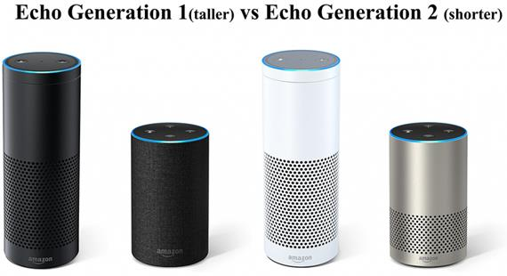
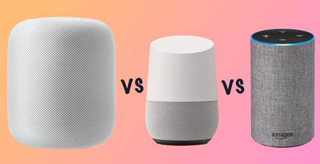
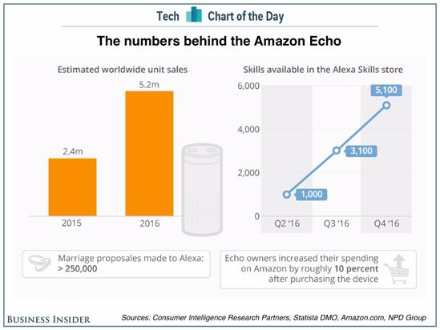
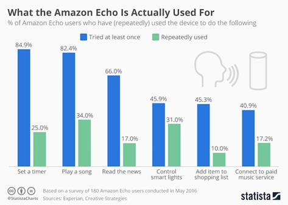

Data publicării: 10.01.2018
Autor articol: Adrian Iftene
Amazon Echo
Amazon Echo va fi întotdeauna cunoscut pentru aducerea unei funcționalități inteligente în lumea vorbitorilor. Și totul a fost datorat lui Alexa, vocea inteligentă de la Amazon, care a adus boxa vorbitoare Amazon Echo la viață (Davis, 2017). Evident, a fost un truc la început, dar Amazon a fost foarte vocal cu privire la îmbunătățirea Alexa, iar acum este o parte vitală și importantă a noțiunii de casă inteligentă. Aceasta este o binecuvântare și un blestem pentru Amazon. Inițial, Alexa a fost disponibilă numai prin dispozitivele pe care le-a făcut compania, dar acum este omniprezentă, deoarece la mulți producători de difuzoare li s-a permis să folosească Alexa – cel mai mare utilizator recent fiind Sonos One.
Dar pentru ca Amazon să-și păstreze boxa vorbitoare în clasa produselor de top, a trebuit să schimbe ceva. Așa a apărut Amazon Echo a doua generație, cu un look complet diferit pentru gama Echo (vezi Figura 1). În prezent, aceasta este un difuzor proiectat pentru a se potrivi cu mobilierul nostru de acasă, în comparație cu suportul pentru cel mai recent film Star Wars, cum era versiunea inițială.
Design și caracteristici
Noul Amazon Echo continuă cruciada începută de Amazon cu scopul de a face vocea componenta principală a viitorului sistem de operare, susținând competențele Alexa și împachetând toate acestea într-un mod mult mai plăcut – unul ce permite inter-schimbări. Aspectul noului Echo este mai mic și mai lat decât predecesorul său, ceea ce înseamnă că este mult mai stabil.

Dacă cu vechiul Echo trăiam sub amenințarea unei lovituri accidentale gata oricând să-l răstoarne, noua versiune a eliminat această problemă. Aspectul său este mai puțin science-fiction și mai mult în concordanță cu ultimele difuzoare inteligente – în special Google Home și produsul HomePod, încă nelansat de Apple (vezi Figura 2).

Culoarea versiunilor de Amzon Echo s-a extins foarte mult, de la clasicele alb și negru spre culoarea cărbunelui și alte palete de culori care pot fi alese de cumpărător, precum și materialul folosit pentru a acoperi dispozitivul. Există trei opțiuni de țesături: ce imită cărbunele, vântul și gresia. Există, de asemenea, trei oferte “finisate”: stejar, nuc și argint. Aceste huse sunt interschimbabile și pot fi achiziționate separat (Chacksfield, 2018).
Performanță
Amazon Echo 2 face ca utilizarea aplicației Amazon Alexa să fie mult mai ușoară și mai naturală. Instalarea s-a simplificat foarte mult, iar după instalare becul verde ne va indica că Amazon Alexa așteaptă să-i cerem să facă diverse sarcini. Aceasta este una din îmbunătățirile importante ale acestei versiuni, faptul că avem feedback legat de întrebările și lucrurile pe care i le cerem lui Alexa să le facă. Putem să ne dăm seama că a înțeles sau nu cererea noastră, lucru care lipsea la versiunea mai veche.
Ce putem face cu Alexa? Putem să-l întrebăm pe Alexa cât este ora, cum este vremea (va trebui să introducem în avans unde locuim), putem cere o prezentare pe scurt a știrilor, să-i cerem să ne spună o glumă, să setăm un cronometru, să comandăm un taxi, să comandăm un produs pe Amazon. Există o întreagă listă de lucruri pe care le putem face fără a crea o abilitate specială pentru Alexa (Skill) (care sunt, în esență, componente pentru Echo ale aplicațiilor de pe telefonul nostru) (Chacksfield, 2018).
Putem să-l facem pe Echo să cânte apelând la abilitățile Alexa. În zona muzicii avem de unde selecta abilități: Amazon Music, Spotify, sistemul Sonos, posturi de radio etc. De asemenea, ne poate citi o carte apelând la conținutul unui Kindle.
Evoluția Amazon Echo
Dacă e să ne uităm la evoluția vânzărilor în anul 2016 față de 2015, vom vedea că numărul acestora s-a mărit mai mult de dublu, crescând de la 2.4 milioane de bucăți la 5.2 milioane de bucăți (vezi Figura 4). De asemenea, putem observa că numărul de abilități pentru Alexa a crescut foarte mult (de la 1.000 la 5.100 în doar jumătate de an) (Davis, 2017).

Cei de la Statista au făcut un studiu de piață pentru a vedea la ce este mai folosit Amazon Echo. După cum se poate observa din Figura 5, cele mai folosite abilități sunt folosirea alarmelor, cântarea unei melodii, citirea știrilor, controlarea luminilor din cameră, cumpărături și accesarea serviciilor contra cost pentru a asculta muzică (Davis, 2017).

Concluzii
Amazon Echo a devenit un partener de conversație foarte folosit în America, vânzările acestor produse crescând impresionant în anul 2016, față de anul 2015. Folosit de regulă pentru activități simple (alarmă, muzică, știri) a început să fie folosit pentru activități din ce în ce mai complexe (cumpărare de produse, comandă taxi, căutări pe Internet).
Noul Amazon Echo 2 este o versiune îmbunătățită a gamei Amazon, cu un preț mult mai mic. Este mai inteligent și este integrat cu toate abilitățile Amazon, din gama Echo și, cel mai important, este integrat cu Alexa. Versiunea 2, oarecum asemănătoare ca design cu versiunea anterioară vine cu o calitate mult îmbunătățită a sunetului. Iar prețul este absolut convingător: pentru că Amazon a venit cu o ofertă mai bună, fără a reduce caracteristicile, la un preț cu aproximativ 40% mai ieftin.
Referințe bibliografice
- Chacksfield, M. (2018) Amazon Echo Review. Amazon’s smart speaker just got a whole lot smarter… in looks at least. Techradar. Future Publishing Limited Quay House, The Ambury, Bath BA1 1UA http://www.techradar.com/reviews/audio-visual/hi-fi-and-audio/ audio-systems/amazon-echo-1272454/review
- Davis, B. (2017) Amazon Alexa: Brands must be careful before rushing in. Econsultancy.com Limited. http://econsultancy.com/blog/68786-amazon-alexa-brands-must-be-careful- before-rushing-in
- Amazon Echo: http://econsultancy.com/blog/68786-amazon-alexa-brands-must-be-careful-before-rushing-in
- Amazon Alexa: http://econsultancy.com/blog/68786-amazon-alexa-brands-must-be-careful-before-rushing-in
- Statista: http://www.statista.com/
- Alexa Skills: http://www.usatoday.com/story/tech/columnist/komando/2017/08/04/komando-9-ways- amazons-alexa-can-help-you-kitchen/520894001/
- Amazon Echo 1 în comparație cu Amazon Echo 2: http://chooseyoursmarthomesystem.com/review-amazon-echo-2nd-generation
- Apple HomePod vs Google Home vs Amazon Echo: What’s the difference? http://www.pocket-lint.com/speakers/buyers-guides/139063-apple-homepod-vs-google-home-vs-amazon-echo-what-s-the-difference
- Sonos One: http://www.techradar.com/reviews/sonos-one-review